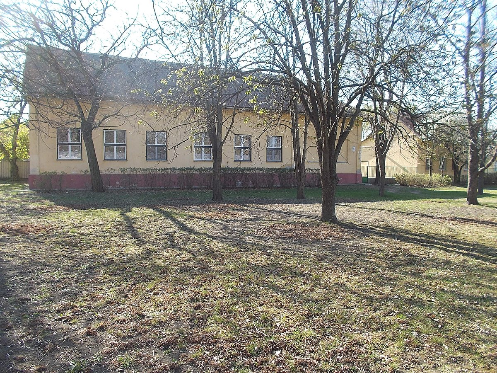
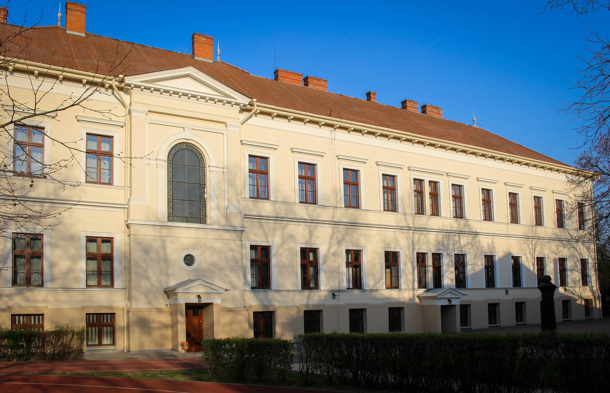
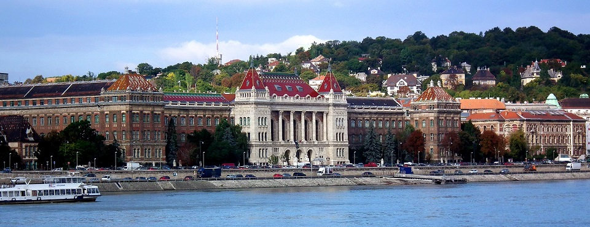

Iskoláim
Általános iskolai tanulmányaimat a Mezőtúri Újvárosi Iskolában végeztem.
A gimnáziumot a Mezőtúri Református Kollégium diákjaként végeztem el, 8 osztályos tanrendben. 2019-ben sikeres érettségi- és nyelvvizsgát tettem.
Jelenleg a Budapesti Műszaki- és Gazdaságtudományi Egyetem első éves hallgatója vagyok, Gépészmérnöki karon (GPK).
Néhány kép az iskoláimról:
Mezőtúri Újvárosi Iskola
Mezőtúri Református Gimnázium
Budapesti Műszaki- és Gadaságtudományi Egyetem